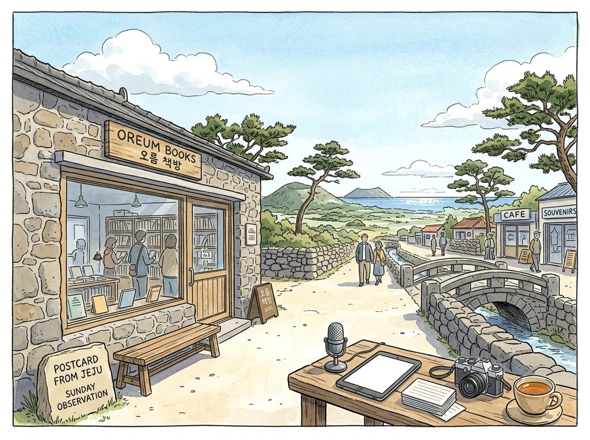

9/25

今日更新
Re-Founding Incumbents for the AI Era with Sequence Holdings Co-Founder and CEO Michael Lee
来源：No Priors
原链接：
状态：已读完整音频 transcript
Sequence Holdings通过永久控股公司模式，将顶尖AI工程能力与传统行业巨头结合，进行深度“再造”，而非简单优化，以应对AI时代带来的颠覆性变革。这期播客深入探讨了AI如何重塑传统产业的商业模式、投资逻辑及组织文化，适合关注AI在传统企业应用、私募股权创新模式以及技术与商业融合的投资者、企业家和技术领导者。
- Sequence Holdings的独特愿景与AI时代机遇：Michael Lee，Sequence Holdings的联合创始人兼CEO，介绍了其公司独特的商业模式：作为一家永久控股公司，Sequence旨在与世界级的管理团队合作，通过引入前沿AI工程技术，收购并“再造”现有企业，使其成为市场领导者。近期，Sequence与戴尔家族办公室Baldwin完成了迄今为止最大的一笔AI私有化交易，金额高达77亿美元。Michael Lee的创业灵感源于2022年末ChatGPT的出现，他意识到AI架构的无限扩展性将彻底改变世界。他认为AI对经济的影响将是不均衡的：某些行业（如餐饮、高尔夫）影响甚微，某些领域（如编程）初创公司更具优势，但对于那些拥有品牌、规模、网络效应和监管优势的传统行业巨头，AI的赋能将是颠覆性的。Sequence正是基于这一洞察，致力于收购合适的传统企业，利用其固有优势，通过AI重塑其竞争力。
- 为何选择永久控股公司与深度所有权模式：Michael Lee解释了Sequence选择永久控股公司结构而非传统基金模式的原因。传统基金受限于投资周期和资本部署压力，往往追求短期退出和财务回报。而Sequence的目标是打造市场领导者，这需要长期持续的投资和运营承诺，以及与管理团队的深度对齐。永久控股公司能够提供这种长期资本，并建立一种以“工程师”而非“投资者”为核心的文化。他强调，在AI时代，如果企业相信“阿尔法”来自工程和AI，就必须创造一种庆祝工程师的文化。此外，深度所有权模式至关重要，因为它能解决激励错位问题，允许Sequence对被投企业的组织结构、人员配置和激励机制进行根本性变革，这是单纯的供应商或合作伙伴关系无法实现的。
- 传统解决方案的局限性：服务商与软件供应商：Michael Lee进一步阐述了传统咨询服务公司（如埃森哲、麦肯锡、Palantir）和通用软件供应商在AI转型中的局限性。服务公司往往以自身利益为导向，追求在客户钱包中的份额增长，这导致其解决方案倾向于渐进式改进，而非颠覆性变革。它们无法真正改变客户的核心组织和激励结构。而通用软件供应商则专注于开发适用于广泛、同质化工作流的产品，其设计理念是优化现有流程，而非基于AI重构全新的“人机协作”生产线。这意味着它们无法支持企业进行深层次的组织重塑。Sequence通过直接所有权和内部的顶尖工程团队，能够超越这些局限，从根本上重新思考和设计企业的运营方式，实现真正的AI驱动的转型。
- 工程师文化与人才吸引力：Sequence Holdings成功吸引了来自Scale AI和Palantir等顶尖公司的工程师，这得益于其独特的文化和使命。首先，Sequence为工程师提供了将AI技术应用于经济中“毛细血管”般重要公司的机会，直接影响人们的日常生活，这比仅仅优化模型更具使命感。其次，对于“前线部署工程师”而言，Sequence提供了与他们所创造的价值高度对齐的机会，能够推动作为服务提供商无法实现的变革。此外，Michael Lee指出，对于应用软件工程师来说，Sequence的商业模式对AI模型性能的提升具有免疫力，模型越好，Sequence的工具箱就越丰富，这消除了许多技术公司面临的生存风险。这种独特的价值主张，使得Sequence能够汇聚并留住世界级的工程人才。
- 银行与保险：AI“再造”的理想试验田：Michael Lee以Bank South和Baldwin为例，说明了Sequence选择投资标的的逻辑。Bank South是Sequence的第一个试点项目，从服务客户开始，最终转变为投资伙伴。他发现银行业作为受监管机构，其运营流程和数据卫生高度规范，非常适合AI代理的应用。更重要的是，银行的运营具有高度集中性，例如所有承保业务都集中处理，这意味着在总部构建的AI解决方案可以摊销到所有分支机构，效率极高。保险经纪行业（如Baldwin）也具备类似优势：市场规模巨大（每年2万亿美元保费），现有巨头拥有强大的护城河（关系导向、客户不直接付费、高留存率），初创公司难以竞争。这些行业都展现出Michael Lee所称的“组织物理学”上的“密度”和“集中性”，使其成为AI深度改造的理想目标。
Friday Wrap-Up: A President's View on Global Power and Learning from Big Tech
来源：In Good Company with Nicolai Tangen
状态：已读完整音频 transcript
这期播客深度探讨了芬兰总统亚历山大·斯图布对全球权力格局的独到见解，以及挪威主权财富基金CEO尼古拉·坦根从顶尖科技公司学到的组织效率与技术转型经验。它适合所有关注地缘政治变迁、科技发展趋势以及企业如何适应快速变化时代的中文读者。
- 芬兰总统的全球洞察力与影响力：芬兰总统亚历山大·斯图布（Alexander Stubb）凭借其卓越的智慧、教育背景和清晰的表达能力，已成为地缘政治领域极具影响力的声音。芬兰总统负责外交和国防政策，这使斯图布有充足时间与各国领导人建立紧密关系，如与挪威首相卡尼等。他积极通过媒体和播客发声，有效提升了芬兰在国际舞台上的影响力，尤其是在芬兰近期加入北约的背景下，其地理位置（瑞典与俄罗斯之间）更凸显了其战略重要性。
- 全球权力格局的转折点：南方世界的崛起：斯图布总统认为，当前世界正处于一个与1918、1945、1989年同样重要的历史转折点。他强调，未来全球格局的主导者将是“南方世界”（Global South）。中国正积极与非洲、印度及南美洲国家建立紧密联系，而西方国家过去对这些地区的忽视，正使其付出代价，错失了参与全球发展新浪潮的机会。斯图布主张建立一个以联合国为核心的多边体系，并呼吁改革联合国安理会，为南方世界提供更多席位，以反映新的全球力量平衡。
- 科技巨头：新的权力维度与民主挑战：斯图布将全球权力格局描述为“权力矩形”（rectangle of power），其中除了美国、中国和欧盟，科技公司也占据了核心位置。他指出，科技巨头如英伟达、苹果等，其市值已超越许多国家（如英伟达市值超过韩国股市总和，苹果市值大于法国或瑞士），拥有强大的现金流和稳健的资产负债表，与许多财政赤字缠身的国家形成鲜明对比。这些公司不仅拥有巨大的经济实力，更对民主制度构成深远影响，因为民主国家尚未充分适应这种新的技术发展。
- 向顶尖科技公司学习：生产力与组织转型：挪威主权财富基金CEO尼古拉·坦根（Nicolai Tangen）近期率领基金的首席开发人员和AI工程师团队访问美国西海岸，与微软、英伟达、优步、OpenAI和Anthropic等顶尖科技公司交流学习。此行的核心发现是，这些公司普遍采用小型团队和高度自动化的流程，从而实现了惊人的生产力提升，在许多案例中甚至超过300%。坦根强调，基金此行旨在学习这些最佳实践，并将其复制到基金的运营中，以提升效率。
- 挪威主权财富基金的“软件公司”转型之路：坦根深刻认识到，挪威主权财富基金本质上是一家拥有金融市场深厚专业知识的“软件公司”。这一认知对基金的运营模式具有重大启示，包括提升开发速度、敏捷性、系统构建方式、试点项目推行以及成果推广能力。他认为，基金需要更彻底地审视和重构其内部流程，以适应这种“软件公司”的思维模式。虽然此行主要关注技术而非投资，但科技行业变革的惊人速度也令他印象深刻。
Essentials: Optimal Protocols to Build Strength & Grow Muscles | Dr. Andy Galpin
来源：Huberman Lab
状态：已读网页 transcript
这期播客深入探讨了力量训练和肌肉增长的科学原理与实践方案，由运动科学家安迪·加尔平博士详细讲解。它不仅区分了力量与肌肥大的训练目标，更提供了从核心原则、具体方法到计划构建的全面指导，适合所有希望通过科学方法提升力量、增加肌肉量或改善身体机能的健身爱好者和专业人士。
- 力量训练的基石：为何重要与目标区分：安迪·加尔平博士强调，力量训练是维持和提升身体功能、延缓衰老过程的关键。随着年龄增长，肌肉量和力量的流失是普遍现象，而抗阻训练能有效对抗这一趋势。播客首先明确区分了“力量增长”和“肌肉肥大”（肌肥大）这两个核心目标。力量增长主要依赖神经系统的适应，即身体更有效地募集和协调肌肉纤维；而肌肥大则涉及肌肉细胞的实际增大。虽然两者常伴随发生，但最佳的训练协议有所不同，理解这种差异是制定有效训练计划的第一步。
- 核心原则：一致性、渐进超负荷与个性化：所有成功的训练计划都离不开几个基本原则。首先是“一致性”，即持之以恒地训练。其次是“渐进超负荷”，这是肌肉和力量增长的驱动力，意味着需要逐渐增加训练的负荷、次数、组数或缩短休息时间，迫使身体不断适应更强的刺激。此外，“个性化”至关重要，训练方案需根据个人目标、现有体能水平、可用的设备和时间进行调整。同时，训练应具备“特异性”（与目标匹配）和“多样性”（适度变化以避免平台期）。
- 力量增长的“3到5”法则与速度控制：对于以力量增长为主要目标的训练，加尔平博士提出了实用的“3到5”法则：即进行3-5组，每组3-5次重复，组间休息3-5分钟。这种低次数、高负荷、长休息的模式能最大化神经系统的募集效率。在重复速度上，力量训练通常要求向心收缩（发力阶段）尽可能快，而离心收缩（还原阶段）则需保持控制，但不必刻意放慢。动作选择上，应优先选择深蹲、硬拉、卧推等多关节复合动作，它们能同时调动多块肌肉群，对力量提升效果显著。
- 肌肥大训练的刺激策略与动作选择：若目标是肌肉肥大，训练策略则有所不同。肌肥大需要足够的“训练刺激”，通常通过中等负荷、较高容量（更多组数和次数）以及接近力竭的训练来实现。重复次数通常在8-15次之间，甚至更高，以确保肌肉在张力下停留足够长时间。重复速度上，控制离心收缩（约2-4秒）并感受肌肉的收缩是关键，这能增加肌肉的做功时间。动作选择上，除了复合动作，也可加入孤立动作（如弯举、飞鸟）来更精确地刺激特定肌肉群，同时结合自由重量和器械训练，以提供不同角度的刺激。
- 构建高效训练计划：顺序、容量与频率：一个高效的训练计划需要合理安排练习顺序、训练容量和频率。通常，多关节复合动作应放在训练开始时，因为它们需要更高的能量和专注度。孤立动作或器械训练可放在之后。预疲劳训练（先孤立后复合）在特定情况下有其价值，但并非普遍适用。训练分化（如全身训练、上下肢分化、推拉腿分化）应根据个人时间安排和恢复能力来选择。每周每块肌肉的有效训练组数建议在10-20组之间，训练频率上，全身训练每周2-3次，分化训练则可每周1-2次刺激同一肌肉群。
Most Replayed Moment: A Guilt-Free Way to Handle Work and Life
来源：Diary of a CEO
原链接：
状态：已读完整音频 transcript
这期播客深入探讨了职业生涯的多元发展路径和颠覆性的创业策略，特别是Deciem（The Ordinary母公司）如何通过“专注被高估”的多品牌模式取得成功，为渴望创新、挑战传统商业思维的创业者和职场人士提供了独特的视角和宝贵启示。
- 职业生涯的多元路径：从企业到创业：播客开篇，主持人Steven Bartlett分享了自己作为年轻创业者在财务管理上的“冒名顶替综合症”，引出对Zero这类财务管理工具的依赖，暗示了创业者需具备的全面技能。嘉宾Nicola Kilner在谈及对子女的职业建议时，强调大学并非唯一选择，反而推荐先在大公司（如Boots）工作几年。她认为，在大企业能学到其运作的优点和大型组织的局限性，她自己在Boots的两年实习经验远超大学所学。对于那些有强烈改变欲望的人，她则力荐创业或加入初创公司，认为那里充满活力和无限可能。
- 在大企业中培养创业精神：Boots的宝贵经历：Nicola在Boots的职业生涯，从助理采购员晋升为采购经理，这段经历为她日后的创业奠定了坚实基础。她的工作核心是建立合作关系、全球范围内寻找创新品牌，并“手把手”地帮助像Indeed Labs创始人Brandon Truaxe这样的创业者，通过Boots的“Latest Finds”项目将产品推向市场。她深刻理解“上市与热爱”的理念，即产品上架只是开始，更重要的是通过公关和营销驱动消费者购买。这段经历让她学会了与供应链、财务、法务等多个部门协作，深入理解消费品市场和需求创造，培养了极强的创业实战能力。
- 遇见志同道合的伙伴：Deciem的缘起：Nicola与Brandon Truaxe的相遇，是Deciem诞生的关键。Brandon曾是Indeed Labs的创始人，Nicola在Boots与他合作时，被他邮件中洋溢的活力、积极和热情深深吸引，认为他是一个渴望让世界变得更美好的人。当Brandon出人意料地离开Indeed Labs后，他向Nicola分享了创立Deciem的宏大构想——一个源自拉丁语“10”的公司，旨在同时开展10个不同领域的项目，包括美妆、科技和食品等。Nicola当时也有自己的美妆产品评级平台想法，两人一拍即合。Nicola在23、24岁时，毅然放弃了Boots的稳定职位，尽管家人不解，但她坚信自己不属于那里，决心与Brandon共同开启Deciem的征程。
- “专注被高估了”：Deciem的多品牌策略：Deciem的商业哲学颠覆了传统观念。其墨尔本办公室墙上赫然写着“专注被高估了”，这与主流商业书籍强调的“专注”理念背道而驰。Nicola解释了多品牌策略的诸多益处：首先，它有助于构建内部生态系统，如自建生产线和内部公关团队，这些基础设施的投入成本，若由一个品牌承担则过高，但分摊到10个品牌则更具经济性。其次，效率更高，例如拜访采购商时，一次可展示10个品牌。最重要的是，消费品市场充满不确定性，多品牌策略允许公司以相对较低的成本和更快的速度进行试错，不断尝试新产品，直到找到真正能获得市场牵引力的爆款。
- 多品牌策略的挑战与独特人才观：尽管多品牌策略优势显著，但也存在挑战。Nicola指出，当像The Ordinary这样的品牌取得巨大成功后，其巨大的营收占比会导致公司资源和精力向其倾斜，其他品牌容易被忽视。为解决这一问题，Deciem计划重启孵化器引擎，并为此设立专门团队。此外，Deciem在招聘上也有独到之处：由于初创资金有限，他们主要招聘刚毕业的大学生，而非经验丰富的行业老兵。这一策略带来了意外之喜——这些年轻人没有被传统美妆行业的固有观念束缚，能够以更务实、更具创新性的视角思考问题，从而推动公司形成“与众不同”的独特文化。
Hollywood Was Cooked Before AI, and Now It's Only Getting Worse
来源：Odd Lots
原链接：https://omny.fm/shows/odd-lots/hollywood-was-cooked-before-ai-and-now-its-only-getting-worse
状态：已读完整音频 transcript
这期播客深入剖析了好莱坞在人工智能威胁显现之前就已经面临的结构性困境，揭示了流媒体崛起、传统电视衰落以及疫情和罢工如何共同导致了创意产业的“内伤”，而AI的到来则让情况雪上加霜。它适合所有关注娱乐产业经济变迁、创意工作者生存现状以及技术对传统行业深远影响的中文读者。
- 好莱坞的“病灶”：AI来临前的结构性衰退：播客开篇便直指核心问题：好莱坞是否已“病入膏肓”？嘉宾海耶斯·戴文波特（Hayes Davenport），一位曾为《东行记》和《恶搞之家》等知名节目撰稿的资深编剧，以其亲身经历和行业数据给出了肯定的答案。他指出，衡量好莱坞活力的关键指标——洛杉矶地区的“拍摄日”数量，在2016年达到约4万天的峰值后，便开始呈现下滑趋势。到2019年，这一数字已降至3.7万天左右。这意味着，在新冠疫情爆发、行业大罢工以及人工智能技术大规模应用之前，好莱坞的传统生产模式就已经显露出疲态，其衰退并非一蹴而就，而是有着更深层次的结构性原因。戴文波特通过这些冷峻的数字，为听众描绘了一个在AI浪潮来袭前，就已经面临严峻挑战的娱乐产业图景。
- 流媒体崛起与传统电视的消亡：行业生态的剧变：2016年至2019年间拍摄日数量的下降，其背后主要推手是流媒体经济的蓬勃发展和传统电视及有线电视的式微。戴文波特回忆道，当《纸牌屋》刚上线时，业内甚至将其称为“网络剧”，显示出当时对流媒体模式的陌生与不确定。然而，Netflix、亚马逊等平台迅速崛起，建立了全新的内容制作网络，吸引了大量投资和人才。与此同时，传统的电视网络和有线电视频道却在萎缩。例如，戴文波特早年曾参与制作的喜剧中心（Comedy Central）节目，如今已不再有新的原创剧集。这种此消彼长的态势，导致了整体拍摄日数量的停滞甚至下滑。尽管流媒体带来了新的机会，但它也彻底改变了行业生态，使得许多依赖传统模式的创意工作者面临转型或失业的压力，为后续的困境埋下了伏笔。
- 疫情与罢工的双重打击：雪上加霜的困境：好莱坞本已脆弱的生态在2020年遭遇了新冠疫情的重创，拍摄日数量一度断崖式下跌。尽管2021年因积压项目得到短暂反弹，并在2022年恢复到2019年的水平（约3.7万天），但好景不长。2023年，编剧和演员的大规模罢工再次让行业陷入停滞，拍摄日数量骤降至2.5万天。更令人担忧的是，即便罢工结束，行业也未能如预期般复苏。2024年，拍摄日数量非但没有回升，反而进一步跌至2.3万天，甚至在播客录制时已跌破2万天大关。这意味着，与2016年的峰值相比，好莱坞的拍摄活动已腰斩。业内曾流传着“熬到2025年就能活下来”的口号，但现实却残酷地表明，行业复苏远比想象中艰难，疫情和罢工的连锁反应，让好莱坞的困境雪上加霜。
- 创意人才的生存挣扎：从播客到“求生工作”：传统好莱坞的衰退直接冲击了数以万计的创意工作者，尤其是编剧群体。戴文波特指出，许多编剧面临失业，不得不寻找新的出路。播客成为了不少人的“避风港”，为他们提供了一个继续创作和发声的平台。然而，这并非长久之计，也无法替代传统影视行业提供的稳定收入和职业发展。许多编剧被迫离开洛杉矶，回到家乡，或者为了生计从事各种“求生工作”（survival jobs）。一个值得注意的现象是，在2010年代后期，随着新节目的增多，美国编剧工会（WGA）的会员数量曾大幅增长。然而，随着近年来制作数量的锐减，这些新加入的编剧发现自己面临着前所未有的就业机会短缺，行业“中产阶级”的生存空间被严重挤压，职业前景变得异常黯淡。
- “网红经济”：好莱坞经济版图的新生力量？：在传统好莱坞产业面临困境的同时，洛杉矶的经济版图上却涌现出另一股力量——“网红/创作者经济”。戴文波特强调，虽然这并非传统意义上的“好莱坞产业”（即大型工作室、电视网络等），但它无疑是洛杉矶整体经济的重要组成部分。通过吸引全球订阅者的资金，创作者经济为当地带来了可观的收入和就业机会。他甚至略带羡慕地提到纽约街头随处可见的短视频内容创作文化，例如街头采访路人“你听什么歌？”或“你的自信从何而来？”等。相比之下，洛杉矶虽然是娱乐之都，但这种自发、草根的街头内容创作氛围似乎并不浓厚。这表明，尽管创作者经济在蓬勃发展，但它与传统好莱坞的运作模式、人才需求和文化氛围存在显著差异，无法简单地替代或弥补传统产业的衰退。
历史精选
Ferrari
来源：Acquired
原链接：https://www.acquired.fm/episodes/ferrari
状态：已读网页 transcript
这期播客深入剖析了法拉利如何从恩佐·法拉利的个人悲剧与赛车梦想中崛起，通过极致的稀缺性、对赛车运动的狂热投入、以及精妙的品牌神话构建，成为一个超越汽车制造的全球顶级奢侈品牌。它不仅销售高性能机器，更贩卖一种关于速度、激情、死亡与活在当下的意大利式梦想。这期节目适合所有对奢侈品战略、品牌叙事、汽车工业史以及创始人精神感兴趣的听众。
- 法拉利的悖论：贩卖梦想而非交通工具：法拉利是Acquired节目研究过的最矛盾的公司之一。它每年仅生产约1.4万辆汽车，其中80%预留给现有客户，这意味着每年只有不到3000名新客户。然而，法拉利拥有超过10亿人的品牌认知度，其市值甚至超越了福特、大众和奔驰等巨头。与保时捷（产量是其22倍）、爱马仕（柏金包产量是其10倍）和劳力士（产量是其70倍）相比，法拉利以极低的产量实现了最高的品牌价值和利润率。这种独特的商业模式并非偶然，而是恩佐·法拉利半个世纪以来，将死亡、速度、爱情和生命激情融入品牌叙事的成果，它贩卖的不是交通工具，而是一种极致的梦想和生活方式。
- 恩佐·法拉利的早年悲剧与赛车梦想：恩佐·法拉利于1898年出生在意大利摩德纳，父亲是成功的金属加工商人，但家庭关系紧张。父亲的格言“一个公司，合伙人数量为奇数且少于三人时最完美”对他影响深远。第一次世界大战期间，恩佐的父亲和哥哥迪诺相继因肺炎去世，恩佐本人也险些丧命。这些早年经历给他留下了“幸存者”的沉重负担，也塑造了他日后对生命的看法。尽管学业不佳，恩佐从小就对赛车充满热情。战后，他被菲亚特拒绝，但最终在CMN公司找到工作，并用未来薪水购买赛车，开启了他的赛车生涯。
- 从赛车手到“法拉利车队”的诞生：恩佐的赛车天赋不错，但并非顶尖，他意识到自己“太害怕死亡”，无法像真正的冠军那样将赛车推向极限。在亲眼目睹两位导师在赛道上丧生后，他于1924年退役，尝试过教练车身制造业务但失败。随后，他成为阿尔法·罗密欧的经销商，并于1929年向阿尔法·罗密欧提议，由他组建并运营一支私人车队——“法拉利车队”（Scuderia Ferrari），作为阿尔法·罗密欧的官方赛车代理。这支车队不仅为他带来了宣传，也承载了他未来制造自己汽车的雄心。车队标志“跃马”源自一战英雄巴拉卡伯爵的飞机，被恩佐巧妙地融入摩德纳的黄色盾牌和意大利国旗色中，成为法拉利品牌的象征。
- 恩佐的营销天才与品牌神话：与普遍认为恩佐只关心赛车、不屑公路车的观点不同，播客指出恩佐是一位天生的企业家和营销大师，堪称“意大利的史蒂夫·乔布斯”。他深谙如何塑造品牌形象和激发欲望。他刻意营造出一位不关心商业、只专注于赛车艺术家的形象（如常戴墨镜），让客户感到能拥有一辆法拉利是莫大的荣幸。他坚持“我卖的是发动机，车身是免费附送的”理念，甚至在技术上（如中置发动机）也表现出“晚期采纳者”的姿态，这反而强化了法拉利传统与匠心的神话。1933年，法拉利车队正式成为阿尔法·罗密欧的官方赛车部门，甚至在墨索里尼时代成为意大利的国家赛车队，进一步巩固了其民族象征地位。
- 战后复兴：公路车的诞生与美国市场：二战期间，恩佐的工厂被轰炸，但他利用非竞争条款的空档，成立了Auto Avio Costruzioni（即后来的法拉利股份公司），为战争生产机床，并在产品上刻上跃马标志，预示着战后的回归。战后，流亡美国的意大利赛车手路易吉·基内蒂向恩佐描绘了富裕美国市场的巨大潜力，那里的人们对欧洲精英机器充满“天真的殖民欲望”。1947年，恩佐制造了首批三辆法拉利赛车，并赢得了多场比赛。1948年，49岁的恩佐推出了第一款公路车——法拉利166 Barchetta，它兼具感性造型、速度与优雅。早期客户包括美国富豪和菲亚特创始人阿涅利家族的詹尼·阿涅利。1949年，基内蒂驾驶私人166赛车赢得勒芒24小时耐力赛，极大地提升了法拉利在国际上的声誉和市场需求。
[email protected]
来源：Business Breakdowns
原链接：https://joincolossus.com/cdn-cgi/l/email-protection
状态：材料不足
材料不足：这期需要 transcript 或更完整正文后再做全篇摘要。
- 网页正文抓取失败：HTTP Error 404: Not Found